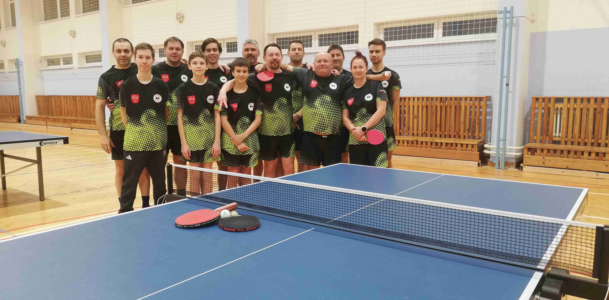

Stolní tenis Letonice
Oficiální stránka oddílu

Historie oddílu
Oddíl stolního tenisu Letonice byl založen v roce 2016 sedmi nadšenci.
Letos slavíme již desátou sezónu naší činnosti. Největším úspěchem oddílu bylo vítězství družstva v OS2 sezóna 2024/25, kdy jsme ani jednou nepoznali chuť porážky.
Naše družstva
V současnosti máme dvě družstva a celkem 15 členů. Hrajeme dvě soutěže: O.S.4 a O.S.1.
Družstvo A
- Sýkora Daniel
- Lokaj David
- Juhás Pavel
- Skokan Miroslav
- Lokaj Ladislav
- Lokaj Vít

Družstvo B
- Lokaj Vít
- Fajtl Jakub
- Selinger Pavel
- Bílá Hana
- Marek Vojta
- Marek Kamil
- Rotrekl Tomáš
- Chládek Libor
- Lokaj Jiří
- Fajtl Tomáš
Trénujeme každou středu od 18 hod. ve školní tělocvičně.
Tabulka zápasů
Aktuální tabulku zápasů najdete na webu Českého svazu stolního tenisu:
Otevřít tabulku